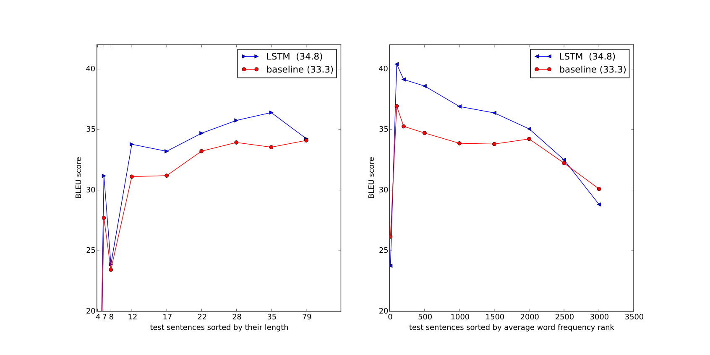
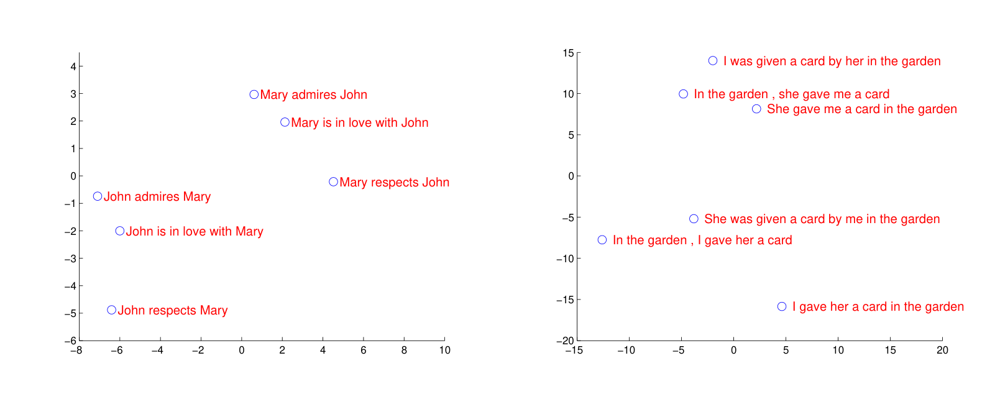

신경망을 이용한 시퀀스-투-시퀀스 학습
심층 신경망(Deep Neural Networks, DNN)은 매우 어려운 다양한 머신러닝 과제에서 뛰어난 성능을 입증해 온 강력한 모델이다. 그러나 뛰어난 유연성에도 불구하고 DNN은 입력과 출력의 길이가 가변적이며 서로 다른 차원을 갖는 시퀀스 매핑 문제에는 직접 적용하기 어렵다는 한계가 있었다.
본 논문은 시퀀스 구조에 대한 사전 가정을 최소화하는 일반적인 종단 간(End-to-End) 시퀀스 학습 접근법을 제안한다. 우리의 아이디어는 다층 순환 신경망(LSTM)을 사용하여 가변 길이의 입력 시퀀스를 고정된 차원의 벡터 표현으로 매핑하고, 또 다른 심층 LSTM을 사용하여 이 벡터 표현으로부터 가변 길이의 목표 출력 시퀀스를 디코딩(생성)하는 것이다.
WMT'14 영어-프랑스어 번역 과제에서, 우리의 다층 LSTM 단일 모델은 전체 테스트 세트에서 BLEU 34.81점을 기록하여 기존 구문 기반 통계적 기계번역(SMT) 베이스라인(33.30점)을 크게 앞질렀다. 또한 기존 SMT 시스템의 1,000-best 번역 후보들을 LSTM으로 재채점(Rescoring)했을 때 BLEU 36.5점을 달성하여 이전 최고 기록에 근접했다.
나아가 우리가 제안한 LSTM은 매우 긴 문장에서도 번역 품질이 거의 저하되지 않았다. 이는 원문(소스) 문장의 단어 순서를 뒤집어(Reverse) 입력함으로써 학습 과정에서 수많은 단기 의존성(Short-term dependencies)을 유도해 최적화를 극적으로 단순화했기 때문이다.
1. 서론 (Introduction)
심층 신경망(DNN)은 음성 인식, 시각 객체 인식 등 복잡한 패턴 매핑 분야에서 놀라운 성과를 거두었다. DNN이 강력한 이유는 역전파 알고리즘을 통해 파라미터를 임의의 병렬 연산 그래프로 최적화할 수 있기 때문이다. 그러나 DNN의 가장 치명적인 제약은 입력과 출력의 크기가 미리 고정된 벡터여야 한다는 점이다.
기계번역, 음성 인식, 질의응답과 같은 자연어 처리 과제는 본질적으로 길이가 제각각인 시퀀스 데이터를 다룬다. 예를 들어 영어 문장의 단어 수와 이를 프랑스어로 번역한 문장의 단어 수는 전혀 다르며, 단어 간의 일대일 대응 관계도 비선형적이고 복잡하다. 따라서 도메인에 구애받지 않고 임의의 시퀀스를 또 다른 시퀀스로 자유롭게 매핑할 수 있는 범용 모델이 절실했다.
"아무리 긴 문장이라도 하나의 압축된 의미 벡터로 변환할 수 있다면, 그 벡터에서 다시 새로운 언어의 문장을 풀어낼 수 있지 않을까?" 이것이 바로 인코더-디코더 기반 시퀀스-투-시퀀스(Seq2Seq)의 출발점입니다.
본 논문에서는 장기 의존성(Long-term dependency) 학습에 능한 LSTM(Long Short-Term Memory) 신경망을 채택한다. 하나의 LSTM으로 소스 시퀀스를 한 단어씩 읽어 마지막 단어를 처리했을 때의 은닉 상태(Hidden State)를 문장 전체의 요약 벡터로 삼고, 두 번째 LSTM이 이 벡터를 시작점으로 삼아 타깃 시퀀스를 순차 생성한다.
2. 모델 아키텍처 (The Model)
표준적인 순환 신경망(RNN)은 입력 시퀀스 $(x_1, \dots, x_T)$가 주어졌을 때 다음 반복 수식을 통해 은닉 상태 $h_t$와 출력 시퀀스 $(y_1, \dots, y_T)$를 계산한다:
표준 RNN은 입력과 출력의 길이가 같고 둘 사이의 시간적 정렬(Alignment)이 미리 알려진 경우에는 쉽게 적용할 수 있다. 하지만 기계번역처럼 입력 길이 $T$와 출력 길이 $T'$가 다르고 어순이 뒤바뀌는 비단조적(Non-monotonic) 관계에서는 적용이 불가능하다.
우리가 해결하고자 하는 목표는 소스 시퀀스 $(x_1, \dots, x_T)$가 주어졌을 때 길이가 다른 타깃 시퀀스 $(y_1, \dots, y_{T'})$가 생성될 조건부 확률 $p(y_1, \dots, y_{T'} \mid x_1, \dots, x_T)$을 모델링하는 것이다:
여기서 $v$는 소스 시퀀스를 모두 읽은 후 인코더 LSTM의 마지막 은닉 상태로 주어지는 고정 차원의 컨텍스트 벡터이다. 디코더는 표준 LSTM 언어 모델(Language Model) 형태를 취하며, 매 스텝마다 소프트맥스(Softmax)를 통해 어휘 사전 전체에 대한 단어 확률 분포를 출력한다. 각 문장의 끝에는 특수 토큰 <EOS> (End of Sentence)를 붙여 모델이 언제 생성을 멈춰야 할지를 스스로 결정하게 한다.

인코더 LSTM이 소스 문장 "A", "B", "C", "<EOS>"를 차례대로 읽어 고정 차원의 은닉 표현 벡터로 압축한다. 그 후 디코더 LSTM이 이 표현을 넘겨받아 타깃 문장 "W", "X", "Y", "Z", "<EOS>"를 순차적으로 예측한다. 모델은 특수 토큰 <EOS>를 출력할 때 비로소 생성을 종료한다.
🌟 성공을 이끈 3가지 핵심 설계 및 역순 입력 트릭
논문에서 제안한 실제 구현 모델은 기본 설명과 비교해 세 가지 결정적인 차이점을 가진다:
- 인코더와 디코더의 분리: 입력 시퀀스를 처리하는 LSTM과 출력 시퀀스를 생성하는 LSTM으로 두 개의 독립된 파라미터 세트를 두었다. 연산 비용은 거의 늘어나지 않으면서 모델 파라미터 용량을 배가시킬 수 있다.
- 4층 심층 LSTM (Deep LSTMs): 단층 LSTM보다 층을 깊게 쌓은 4-Layer LSTM이 얕은 신경망보다 압도적으로 뛰어난 성능을 보였다.
-
⭐️ 소스 문장 역순 입력 (Reversing the Source Sentences):
소스 문장의 단어 순서를 완전히 거꾸로 뒤집어 입력했다. 즉, $(A, B, C) \to (X, Y, Z)$ 대신 $(C, B, A) \to (X, Y, Z)$로 학습시킨 것이다!
원래 순서대로라면 첫 번째 단어 $A$와 그에 대응하는 번역 단어 $X$ 사이의 거리는 입력 문장의 전체 길이만큼 떨어져 있어 역전파 시 기울기가 전달되기 매우 어렵습니다. 하지만 문장을 뒤집으면 $A$ 바로 다음에 디코더의 첫 번째 예측 단어 $X$가 위치하게 되므로 두 단어 사이의 최소 시간 지연(Minimal Time Lag)이 0에 가깝게 단축됩니다. 따라서 첫 단어의 기울기가 즉각적으로 인코더에 도달하여 신경망 전체의 가중치가 훨씬 수월하게 최적화됩니다.
3. 실험 및 결과 (Experiments)
3.1 데이터셋 상세 (Dataset Details)
WMT'14 영어-프랑스어 기계번역 벤치마크 데이터를 사용했다. 전체 데이터 중 선별된 1,200만 쌍의 병렬 문장(프랑스어 3억 4,800만 단어, 영어 3억 400만 단어)으로 학습을 진행했다.
신경망의 계산 효율을 위해 소스 언어(영어)는 가장 빈번한 160,000개 단어, 타깃 언어(프랑스어)는 80,000개 단어로 어휘 사전을 제한했다. 사전에 포함되지 않은 모든 미등록 단어는 특수 토큰 <UNK>로 대체했다.
3.2 디코딩 및 재채점 (Decoding and Rescoring)
디코딩 시에는 최적의 번역 문장 $\hat{T} = \arg\max_T p(T \mid S)$를 찾기 위해 좌에서 우로 탐색하는 빔 서치(Beam Search)를 적용했다. 빔 크기(Beam Size) $B=1$(Greedy)만으로도 33.0점 이상의 훌륭한 점수가 나왔으며, $B=2$일 때 점수가 급상승했고, $B=12$에서 거의 최적의 성능에 수렴했다.
3.4 학습 세부사항 (Training Details)
- 층 수 및 은닉 노드: 4개의 층을 적층한 LSTM, 각 층마다 1,000개의 셀(Unit) 및 1,000차원 단어 임베딩 (총 3억 8,400만 파라미터).
- 파라미터 초기화: $[-0.08, 0.08]$ 범위의 균등 분포(Uniform Distribution)로 초기화.
- 최적화 알고리즘: 순수 확률적 경사하강법(SGD), 모멘텀 없이 기본 학습률 0.7 적용. 5 에포크 후 매 반 에포크마다 학습률을 절반으로 감쇠 (총 7.5 에포크 학습).
- 미니배치 크기: 128개 문장 쌍. 긴 문장들의 패딩 낭비를 줄이기 위해 문장 길이가 비슷한 것들끼리 묶어 배치화.
- 기울기 클리핑(Gradient Clipping): 기울기 폭발을 방지하기 위해 전체 기울기 노름 $\|g\|_2 > 5$일 때 스케일을 5로 강제 조정.
3.6 실험 결과 (Quantitative Results)
WMT'14 영어-프랑스어 공식 테스트 세트(ntst14)에서의 번역 성능 결과는 다음과 같다.
| 모델 (Method) | 테스트 BLEU 점수 (ntst14) |
|---|---|
| Bahdanau et al. (ICLR 2015 어텐션 모델) | 28.4 |
| 기존 구문 기반 SMT 베이스라인 (Moses) | 33.30 |
| LSTM 단일 모델 (앙상블 이전, Beam=12) | 34.81 |
| LSTM 5개 모델 앙상블 (Ensemble) | 34.81 |
또한 SMT 시스템이 뽑아낸 1,000개의 번역 후보 목록을 LSTM으로 재채점(Rescoring)했을 때 성능이 더욱 비약적으로 상승했다:
| 재채점 방식 (Rescoring Method) | 테스트 BLEU 점수 |
|---|---|
| SMT 베이스라인 단독 | 33.3 |
| SMT 베이스라인 + LSTM 5개 앙상블 재채점 | 36.5 (+3.2 상승) |
| 당시 역대 최고 대회 1위 기록 (Durrani et al.) | 37.0 |
3.7 긴 문장에서의 놀라운 번역 유지력 (Performance on Long Sentences)
당시 연구자들의 가장 큰 우려는 "고정 크기 벡터에 문장을 우겨넣으면 문장이 길어질 때 기억을 잃어버리지 않겠는가?"였다. 그러나 우리의 LSTM은 문장이 길어져도 번역 성능이 거의 떨어지지 않았다!

왼쪽 그래프: 테스트 문장을 길이 순으로 정렬했을 때의 BLEU 점수 변화. 35단어 이하의 문장에서는 성능 저하가 전혀 없었으며, 60~70단어가 넘어가는 초장문에서도 베이스라인(33.3점)을 훨씬 웃도는 매우 안정적인 번역 품질을 유지했다.
오른쪽 그래프: 희귀 단어(Rare words)가 포함된 문장들에 대한 성능 추이. 어휘 사전 외의 희귀 단어가 많아질수록 성능이 점진적으로 완만하게 감소한다.
3.8 모델 은닉 상태 표현 분석 (Model Analysis)
LSTM이 학습한 문장 표현의 성질을 시각화하기 위해, 여러 문장들을 인코딩한 마지막 은닉 상태를 주성분 분석(PCA)으로 2차원 투영했다.

문장들이 단순한 단어의 집합(Bag-of-words)이 아니라 문맥과 의미 구조에 따라 클러스터링됨을 명확히 보여준다. "Mary respects John"과 "John respects Mary"는 단어 구성은 같지만 주어와 목적어의 순서(어순)가 바뀌자 공간상에서 서로 멀리 떨어져 위치한다. 반면 능동태 "I gave her a card in the garden"과 수동태 "She was given a card by me in the garden"은 의미가 같기 때문에 공간상에서 서로 매우 가깝게 군집을 형성한다.
5. 결론 (Conclusion)
본 논문에서는 복잡한 도메인 지식이나 어휘 구조에 대한 강한 가정 없이, 충분한 용량을 지닌 심층 다층 LSTM만으로 대규모 기계번역 과제에서 기존 구문 기반 SMT 시스템을 능가할 수 있음을 증명했다.
특히 입력 문장의 단어 순서를 뒤집는 단순한 데이터 변환이 최적화 난이도를 획기적으로 낮추어 준다는 점을 발견한 것은 본 연구의 가장 독창적인 기술적 기여이다.
이 연구는 현대 자연어 처리의 패러다임이 복잡한 수작업 통계 파이프라인에서 단일 신경망 기반의 종단 간 시퀀스-투-시퀀스 학습으로 대전환하는 역사적 기폭제가 되었다.